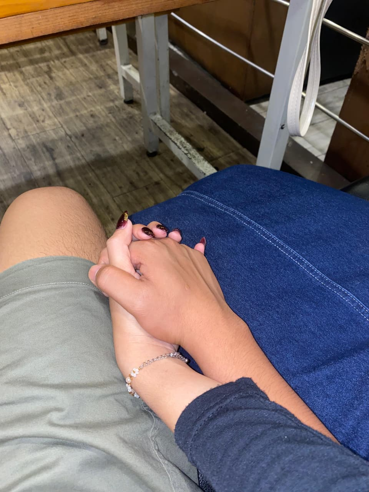

Terima kasih sudah hadir dalam hidupku. Di hari ulang tahunmu ini, aku hanya ingin mengucapkan betapa bersyukurnya aku dipertemukan dengan seseorang sebaik, setulus, dan sehangat dirimu.
Semoga semua impianmu perlahan terwujud, semoga kesehatan, kebahagiaan, dan kesuksesan selalu menyertaimu.
Aku bersyukur bisa menjadi bagian kecil dari perjalanan hidupmu. Terima kasih sudah menjadi tempat pulang, tempat bercerita, dan alasan untuk tersenyum setiap hari.
Aku akan selalu mendukungmu dalam setiap langkah yang kamu ambil. Semoga tahun ini menjadi tahun terbaikmu.
Dengan penuh cinta,
Ayu Puspita
(Pacarmu yang selalu sayang kamu)